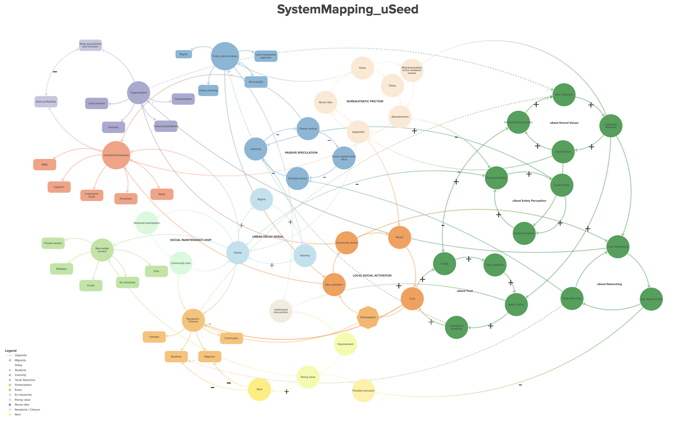

Stakeholders
Governance
Public Admin
Municipality, Region, and local urban planning agencies.
Social
Organizations
Cultural associations and parishes prioritizing inclusion.
Economic
Investors
SMEs, developers, and funds seeking ethical opportunities.
Assets
Landowners
Holders of industrial, railway, or private dormant assets.
Community
Residents
Families, students, commuters, and migrants.
Vicious Cycles
Bureaucratic Friction
Rules block reuse ideas, leading to delays and stagnation despite new initiatives.
Passive Speculation
Owners wait for better conditions ("owner waiting"), increasing tolerance for decay.
Urban Decay Spiral
High vacancy feeds physical decay and social stigma, creating a downward path.
Social Maintenance Loop
Urban decay leads to less community care and reduced social participation.
Risk of Exclusion (Gentrifcation)
Top-down improvements raise rents, potentially displacing fragile groups like students and migrants.
Virtuous Loops
Transition Loop (Activation)
Facilitating space reuse builds trust, driving participation and common action.
uSeed Shared Values
Breaks friction via "Idea Collection" and "Collective Approval," targeting official urban actions.
uSeed Safety Perception
Encourages local events and social interactions, breaking the decay spiral and stigma.
uSeed Networking
Connects public organizations and supports community action, promoting youth retention.
uSeed Trust
Builds faith in institutions through better data collection and more effective, credible policies.